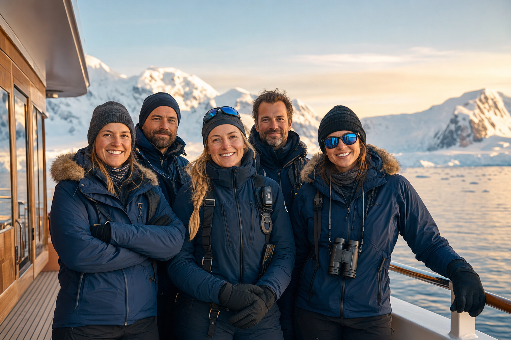

5 Professionals, 24/7
A crew of 5 positive and agile professionals is available around the clock, ready to take care of your needs. This is a small crew — every guest request is handled with personal attention.
Licensed captain, experienced expedition guides, and a dedicated hospitality team ensure safety, discovery, and comfort in equal measure. Optional participation in watchkeeping lets you become a true sea practitioner, not merely a tourist.

Licensed, experienced, and passionate about the polar regions.
Master & Expedition Leader
25 years navigating polar waters. Licensed ice pilot with extensive Ross Sea and Antarctic Peninsula experience.
First Officer
Former research vessel officer. Specialist in weather routing and safe anchorage selection in remote bays.
Expedition Guide & Naturalist
Marine biologist with 15 seasons in Antarctica. Expert in wildlife behaviour, glaciology, and polar ecology.
Expedition Guide
Polar historian and kayak guide. Leads shore landings and interpretive hikes at historic explorer sites.
Chef & Hospitality
Michelin-trained chef crafting gourmet dining experiences in the most remote kitchens on Earth.
Every expedition is led by professionals who know these waters intimately.
Reserve Your Place